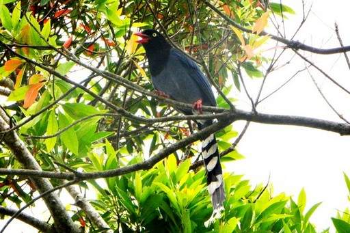

佛光大學生態豐富 學生樂見藍鵲育雛

位於宜蘭縣礁溪鄉的佛光大學校園自
然生態環境豐富，最近正是保育類台
灣藍鵲繁殖季節，在校區內圖書館附
近的梧桐樹上，有一個藍鵲的窩巢，
親鳥們正忙著餵食五隻幼鳥，護巢期
的親鳥經常驅趕樹下的人或鳥，讓學
生們上了寶貴的生態教育課程。
台灣藍鵲是台灣網友票選最具代表性
的特有種鳥類，被譽為「非正式的國
鳥」，校方表示，佛光大學從2011年開始連續三年拍攝記錄到圖書館附近藍鵲育雛的影像，
隨後雖然沒有再近距離看見藍鵲來築巢，但是牠們不曾遠離，這次重回圖書館附近梧桐樹育
雛，讓校方和學生們都感到非常興奮。
佛大校園保有很多原始環境，常見成群台灣藍鵲在校園棲息。每年五月前後，正是藍鵲育雛
季節，很多學生不知不覺經過鳥巢的樹下，莫名其妙遭到「護巢性」特強的藍鵲偷襲後腦杓
。由於親鳥在附近出入頻繁，校方終於在一棵梧桐樹上，找到一窩已經長得快要離巢的五隻
小藍鵲。藍鵲是家族群居性鳥類，連親鳥的兄弟姊妹都會加入育雛行列，這習性被稱為「巢
邊幫手制」。
這些小藍鵲體型已經有親鳥的七成大，初級飛羽和次級飛羽也發育得差不多，他們擠在鳥巢
中偶而還會互相鬥嘴，或是站在巢邊鼓動翅膀，顯然已經快要練飛離巢。許多路過的學生都
可以看見親鳥繁忙的捕食昆蟲或爬蟲回巢餵食，有些學生還說，這兩週常有同學被藍鵲偷襲
，不過，能親眼看見藍鵲在校園裡生生不息，大家都稱讚佛大校園真是自然生態的樂園。
原文網址：http://www.tanews.org.tw/info/14844